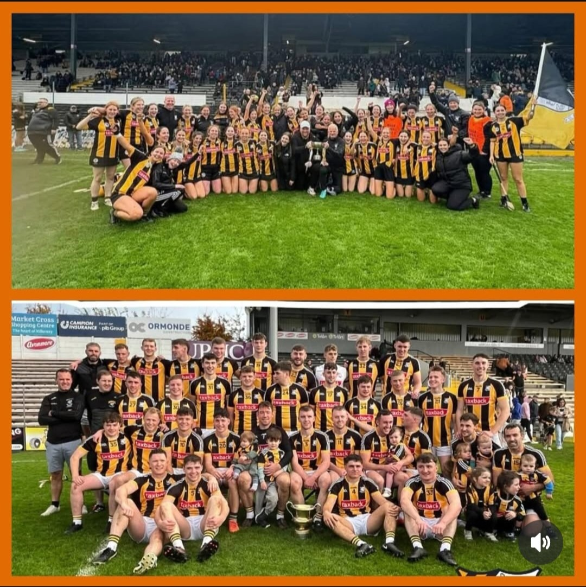

Founded in 1922 Danesfort GAA club now as of 2025 is a Senior club for both camogie and hurling for the first time. In 2025 the intermediate camogie team made club history by winning their first intermediate county final. Giving them a senior team for the first time in the clubs history.
2025 has been a great season for the club members. Both teams Hurling and camogie teams won their intermediate county finals on the same weekend making both teams Senior and enter into the lenster campionship

Intermedate to Senior journey
Over the past 4 years the damesfort camogie team had created a plan and goal to become senior.
There was many aspects of camogie that us as a team decided needed to be improved. These included:
Team Sport Sociology Sessions
Improved fitness plan
Meal plans before matches
Recover sessions after each game
Off season fitness and gym plans.
The amount of work,effort and sacerfice that was put in over the last 4 years by everyone on the team was defintly celebrated for the weekend before everyone got back traing had for the Lenster championship.